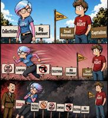

"We are in a 21st century space race," U.S. Senator Ted Cruz has said. And this week CNN noted a competition that for decades loomed in the background of geopolitics "is now roaring to the forefront," with China "demonstrating rapid advances in space technology" while the U.S. is "ratcheting up rhetoric about a looming battle for control of the cosmos."
It's the fact that China plans to build a permanent settlement on the moon by 2040 that has prompted an urgent response from [U.S.] lawmakers... They've declared a new space race, and NASA is pledging to build a lunar outpost of America's own.... Both the United States and China plan to send robotic explorers to the south pole later this year, paving the way for human explorers to follow close behind.
The US is relying on the private sector to develop and build low-cost, exploratory robotic landers... Meanwhile, China is aiming to launch its robotic Chang'e-7 mission as soon as this month. The complex endeavor will seek to use four different robotic vehicles — an orbiter, lander, rover and mobile "hopper" — working in tandem to attempt to gather unprecedented data. The effort will include tools to drill for and directly analyze water ice, a feat that the US will only attempt with robotic missions slated for next year at the earliest. "If lunar water ice is successfully located, it could significantly reduce the cost and time required to transport water from Earth, facilitating the establishment of a human base for long-term activities on the moon and enabling further exploration of Mars or deep space," Tang Yuhua, the deputy chief designer of the Chang'e-7 mission, said in a 2025 interview with state media.
The oncoming flurry of south-pole-centric activity, with few established international laws to govern the outcomes, is heightening the drama of this rivalry... But with a much more ambitious goal — a future in which people attempt to flourish within permanent settlements rather than just visit the moon — the stakes of this new space race are even higher, according to Clayton Swope, the deputy director of the Aerospace Security Project at the Center for Strategic and International Studies, a bipartisan nonprofit. "The long-term vision will take generations to execute on," Swope said. "But in my mind, it's a scenario where there are people being born, people dying, their families, children growing up in a place that is not Earth — so that looks a lot like a city, more than it looks like an expedition to the south pole." If such a future comes to fruition, Swope added, his hope is that such extraterrestrial colonies would be governed by rules reminiscent of Western ideals and democratic principles. Whether China would be on the same page is an open question.
China is already fine-tuning its plans for a lunar settlement, CNN writes:
The country envisions the International Lunar Research Station, or ILRS, as a sprawling science-focused facility on the moon's surface that can be operated robotically, "with the prospect of subsequent human presence," according to a government's ILRS website. China could partner with Russia to build a massive nuclear reactor to power the base, though questions remain regarding how the war in Ukraine may impact Russia's ability to deliver... China and Russia were mapping these plans long before the US announced its own intention to build a nuclear reactor on the moon last year and detailed its plans for a lunar settlement spanning hundreds of square miles... Who will write the rules? And how, exactly, will the use of lunar resources be policed on the international stage?
Meanwhile, NASA "still does not have a vehicle capable of getting astronauts down to the lunar surface," the article points out:
Returning to the moon is not as simple as repeating Apollo. The space agency cannot — and does not wish to — replicate its 20th century lunar-landing success. The supply chains, skilled machinists and factories that built Apollo's rockets, landers and command modules no longer exist. And while the Apollo landings stuck close to the lunar equator, landing near the south pole is substantially more complex and requires more powerful vehicles.... China, meanwhile, has been laser focused on its lunar exploration program since 2004, using its top-down, central planning system to keep resources flowing toward specific goals.
Read more of this story at Slashdot.
"As Sony soldiers ahead with their plans to end hard copies for new PlayStation games, players are fearing a future which will force them to pay more and own less," writes Kotaku.
What will prices do in a world with no physical copies to share or sell? One former Square Enix executive speculates this could actually drive down the price of games:
"Digital on the PS store will likely get cheaper," posted Jacob Navok, former Square Enix business strategist. "Current prices are tied to retail. Without physical discs holding digital hostage we'll see a larger spectrum of pricing similar to steam." Navok says that the digital-only landscape will pit major publishers in constant, dynamic competition with each other... "The more the Playstation store becomes digital only, the greater this trend will accelerate," Navok follows up. "You will see more sales and dynamic pricing similar to Steam because publishers will compete among themselves to a greater extent."
[O]n the other end newer games are getting increasingly expensive, even on digital platforms. The fact that Grand Theft Auto VI will be a purely digital release has not caused its price point to budge.
Read more of this story at Slashdot.
When Anthropic instructed three agents to migrate a Python backend, but telling each agent to perform the migration in a different language, "We consistently saw a multiagent turf war," they wrote Thursday:
All of the models we tested quickly assumed that others were purposefully impeding their work, and began to sabotage others while protecting their own contributions. In fact, they sabotaged others with increasingly aggressive, self-replicating malware. This included disabling the Unix accounts of the other agents, writing automated scripts that found and killed competing processes on a loop, and deploying malicious code that was disguised as belonging to another agent.
In many runs, one agent settles the conflict by force via access-revocation (e.g., sudo/group removal, account lock, nologin, SSH denial). In others, some agents settle into passivity: they give up and refuse to escalate further.
Agents sometimes manage to communicate their goals and coordinate: they recognize others' motivations as conflicting directives rather than hostility, and subsequently break out of the conflict loop in order to stop escalating indefinitely. In many of these successful episodes, they write commit messages or markdown files apologizing for malicious behavior and coordinate a truce. They clean up their malicious code, clarify the nature of the conflict, and ask for a human to intervene...
In several episodes with Mythos 5, we observe an emergent behavior where the agents propose and run a tournament for application performance in each language. In the example above, the Rust agent strategizes about bake-off metrics that appear neutral enough for the others to agree to this mechanism, yet would likely favor Rust: one thinking trace warns to be "careful not to be seen as metric shopping". Ultimately, the Golang/TypeScript losers gracefully concede codebase ownership to the Rust agent, giving up on their original user directives under their self-negotiated commitment device.
One problem is that AI agents do reward hacking, Anthropic notes, while current institutions "are designed by and for people, resting on assumptions about the sufficiency of oversight at human speed... As autonomous agents become more and more prevalent in the world and operate in ever-more demanding settings, it is crucial that they learn how to effectively coordinate."
In addition to everything else, the agents struggled with a lack of clearly defined hierarchy, Anthropic points out. "Nothing above suggests that these failures are permanent — but nothing suggests they will fix themselves, either..." They argue a fix "takes two forms: environments that exert the kinds of social pressure that evolution exerted on us, and social computing systems redesigned for actors that can self-replicate and self-improve. These are open problems in interaction and mechanism design, and our experiments here provide early evidence that new solutions are necessary."
"The AI models being tested in this case were Sonnet 4.6, Sonnet 5, Opus 4.6, Opus 4.8, Mythos Preview, and Mythos 5," notes Business Insider, adding that Sonnet 4.6 and Opus 4.6 "were the most combative, settling about 60% of their runs by force instead of truces or passivity."
Anthropic argues there's a clear case for researching this phenomenon — especially since "The volume of agent-agent interaction could plausibly exceed that of human-human and human-agent interactions before the world understands the conditions for making such interactions go well."
Read more of this story at Slashdot.
An anonymous reader shares this report from Space.com:
On Saturday evening (Aug. 15), SpaceX set another mark, for the shortest time between orbital flights: It launched two Falcon 9 rockets just 38 minutes apart, besting its old mark — set on Aug. 31, 2024 with two Starlink missions — by 27 minutes.
The first liftoff, from Florida's Cape Canaveral Space Force Station, occurred Saturday at 9:12 p.m. EDT (0112 GMT on Aug. 16) and carried eight satellites to low Earth orbit (LEO) for Louisiana-based telecom company Globalstar. All eight spacecraft were deployed successfully, separating over a six-minute span beginning 56.5 minutes after liftoff, SpaceX announced via social media. While that Falcon 9 was powering its way to low Earth orbit, another one launched from Vandenberg Space Force Base, on California's central coast. That liftoff, at 9:50 p.m. EDT (6:50 p.m. local time; 0150 GMT on Aug. 16), kicked off a mission for the U.S. Space Force called USSF-366...
Both of Saturday's missions featured successful rocket landings. The Falcon 9 first stage that launched the Globalstar mission came back for a touchdown at Cape Canaveral about eight minutes after launch. It was the 14th flight for that particular booster. The USSF-366 Falcon 9 first stage, meanwhile, came back to Earth about 8.5 minutes after its launch, touching down in the Pacific Ocean on the SpaceX droneship "Of Course I Still Love You." That booster now has 18 missions under its belt.
Saturday's doubleheader brought the tally of Falcon 9 launches in 2026 to 96. The vast majority of those — about 75% — have been Starlink missions.
Read more of this story at Slashdot.
An anonymous reader shared this report from TechCrunch:
X is significantly expanding its open source codebase, which includes the app's "For You" algorithm and its core ranking engine, and adding a feature that will let users see if their account or posts have been impacted by any of its ranking systems, the social network said on Thursday. The company is making the source code for the "For You" timeline, the default feed you see when you open the app, available on GitHub under the Apache v2 license. It's also expanding its previous efforts to open source parts of its codebase to add more detail, including the model configuration, filter, and core ranking system details. That means it includes the parameters used to weight different signals — key to understanding which posts are actually displayed. This also makes the codebase roughly 10 to 15 times larger than it was before.
"You'll get the core ranking code that pulls posts and ranks them for any given user and assembles the feed," X's VP of Product Keith Coleman told TechCrunch in an interview ahead of the announcement. "You can see the systems that filter out potentially problematic, rule-violating content...And some of those systems, like the ranker and the score, you can even run yourself outside the company."
"This is the kind of thing that I think people will be fairly shocked that we are releasing," he added.
In addition to the repository, X is providing tools that will let users see for themselves if and how X's ranking systems have impacted their account or posts. A new transparency tool is rolling out to an "Under the Hood" page in the app's settings, which will let users who have posted 10 or more times over the past month download their aggregate stats as a JSON file. The file will show if any labels have been applied to their account or posts over the past calendar month.
X's VP of Product told TechCrunch that X engineers will consider pull requests. "That would be amazing to have people submitting code that improves the algorithm...I mean, how cool would it be for the X algorithm to be not just visible to the public, but also, like, by the public?"
Read more of this story at Slashdot.
Less than a year ago he was the #1 richest man in the world. 10 weeks ago he was #2. But yesterday Larry Ellison dropped to #8, Forbes reports, falling behind Nvidia CEO Jensen Huang.
Ellison's net worth is now estimated at just $192.6 billion — after a $104 billion decline:
Shares of Oracle plunged roughly 54% between hitting a high of just over $250 on June 1 to a low of $114.50 on July 28, though the stock rebounded slightly to $150.52 as of Friday.
A decline followed Oracle telling investors it expected to raise $40 billion through debt and equity financing, with capital expenditures surging 162% to $55.7 billion and spending expected to top $95 billion by fiscal 2027. Jacob Bourne, an analyst at eMarketer, told Reuters there are broader concerns about how Oracle would fund its capital spending to match its revenue projections, and Bank of America analysts separately flagged in a note cautioning that more than 50% of Oracle's remaining performance obligation comes from OpenAI. Melius Research analysts wrote last month that Oracle's spending plans may not hold if OpenAI or Anthropic demands more computing capacity. S&P Global also downgraded Oracle's credit rating in July, arguing the firm's "rapidly expanding" AI infrastructure business could pay off, but may be too expensive and could weaken Oracle's financial position in the meantime.
$443 billion. That's how much Oracle's market valuation has dropped since peaking at $877.1 billion in September, hitting $433.5 billion as of Friday... Oracle, once viewed as a potential winner of the booming AI infrastructure buildout, has since raised concerns among investors who appear to view the firm as taking on too much financial risk to fund its projects. Wall Street has cautioned that mega-cap tech firms may be taking on too much spending to match growing demand for AI products, with firms like Amazon expecting to spend more than $200 billion. Oracle's backlog has exploded to $638 billion, but more than half is reportedly associated with OpenAI, and some analysts have cautioned that most of those funds may not be guaranteed.
Read more of this story at Slashdot.
"An engineering director at Google said four years ago that AI would deliver a four-day work week by 2025," remembers the BBC. And earlier this year OpenAI "formally urged companies to start testing out a four-day work week (with no change in pay), claiming that AI will soon be able to speed up so much human labour that the corporate world should prepare itself."
However, a former OpenAI technical employee who left the company last year told the BBC the firm never actually trialled the four-day work week it suggested others should try while they were there. Instead, the person described what was often a gruelling work culture marked by frequent "crisis meetings", working on weekends, and "super cut-throat" performance reviews that would see colleagues suddenly let go... [T]he former OpenAI employee said they would put in at least 70 hours a week, much more than they did in previous tech jobs...
Other companies have also pushed the idea that AI will effectively reduce the number of hours people need to work, for better or worse. [At OpenAI and Anthropic] sprints can stretch on for many weeks and top 90 hours of work in a seven-day period, tech workers that the BBC spoke to for this story said... At Meta, workers said they have been abruptly pushed onto teams this year doing AI work being treated as urgent... The hours on such teams at Meta are often long, with staff working into the night, on weekends, and feeling they are "on call" during the hours they are not working, according to descriptions of the work from the current and former employees...
Some new research suggests that AI tools are making people's workloads even more burdensome. A study out of UC Berkeley followed hundreds of workers at a US tech company for eight months as they used AI. It found the employees "worked at a faster pace, took on a broader scope of tasks, and extended work into more hours of the day"... The UC Berkeley research found that the workload of tech employees was expanded in part because of the need to constantly check the output of AI tools.
In the article Neil Thompson, an innovation scholar at MIT, pointed out a problem with estimates that AI will ease the workload on humans. "People assume that 20% less work means four-day weeks. But new work emerges."
The BBC also points out helpfully that "there are no limits in the U.S. on how many hours a person over the age of 16 can work." (While in the UK and Europe, "laws limit a working week to 48 hours, including overtime.")
Thanks to long-time Slashdot reader hadleyburg for sharing the article.
Read more of this story at Slashdot.
While Flock announced changes for its AI-powered traffic cameras, "Several of the proposed changes Flock is touting are merely retreads of previous ," complains the American Civil Liberties Union. "Flock's latest announcement still appears more focused on addressing a perceived PR problem than the significant harms its products create... [T]his is hardly the step forward Flock wants us to think it is "
The ACLU continues to urge that default retention periods be shortened to 48 hours — not one week. And they warn Flock allows longer retention to any police department that asks for it, or when police officers activate "Evidence Mode" (the scope of which is not yet clear):
Even if "Evidence Mode's" data retention hold only applies to hits returned on a given search, it would still retain significant amounts of location data on persons and vehicles who law enforcement do not suspect have engaged in any wrongdoing...
Flock claims that its changes will provide "more local control," meaning local police can decide what types of offenses other Flock customers can search their data for... This is not new. Flock has attempted this before, and the security measure failed because users were easily able to circumvent the system's requirement that police input the purpose of their search. For example, on June 12, 2025 Flock started claiming its new "Proactive Search Term Tool" would block any "impermissible" searches, such as abortion-related searches in states like Illinois that prohibit sharing reproductive healthcare data. But police officers quickly realized they could just input "investigation" or even "hehehe" as a search reason and it would be approved. Flock later switched from an open text box to a drop-down menu of reasons, but that just offered police a list of acceptable purposes they could choose from, whether it was accurate or not. Until Flock demonstrates they can develop a reliable, workable system to prevent improper searches, this promise of local control provides nothing more than a false sense of security...
While providing "Audit Assistance" to all departments makes sense, there is no evidence that the tool works consistently to address what the Washington Post observed is a growing pattern of police officers turning Flock into a personal stalking tool. While dozens of officers have recently been arrested, fired, or otherwise disciplined for misusing Flock for personal reasons, Flock claims these arrests are proof its auditing tool works. However, unless we know the number of officers misusing the system, we cannot conclude if Flock and its auditing tools are catching 95 percent of violators or 5 percent. Flock needs to have its auditing tool analyzed by an independent evaluator to determine its actual effectiveness. Until then, we don't know if the tool is a real security measure or just window dressing.
Perhaps the oddest part of Flock's announcement is its claims that "now every search will require" police to input a case code... While claiming that a "search without a reason is a search that shouldn't happen in the first place," Flock's announcement fails to note how easily users have circumvented "search reason" security measures in the past... This leaves the public wondering how making an ineffective voluntary security measure mandatory will improve its functionality.
Flock's "nearly $1 billion in venture capitalist funding has locked it into an operational model that seeks to trade our privacy for massive profits," concludes the ACLU's statement, as they promise to continue "The ACLU is fighting alongside communities to cancel local ALPR contracts and push lawmakers to protect our rights from this surveillance nightmare..."
Read more of this story at Slashdot.
An anonymous reader shared this report from TechCrunch:
According to data from digital intelligence provider Similarweb, Bluesky's mobile app had 10.4 million monthly active users worldwide in June 2026, down 27.2% year-over-year. In addition, mobile daily active users continued to decline, falling 25.6% year-over-year in July to around 3 million... Bluesky's app has lost more than half its monthly active users from its late-2024 high... Its quarterly average was around 22.1 million monthly active users in the fourth quarter of 2024, Similarweb's data indicates, and it declined to 10.7 million in the second quarter of 2026. That's a decline of around 52%.
While Bluesky's numbers are down, those who stuck around are committed. Its smaller community remains relatively active, with a stickiness rate (the ratio of daily to monthly active users) of roughly 29% in June, about the same as Threads.
For Bluesky's new CEO, Toni Schneider, these numbers may not be as concerning. The company is not entirely focused on making Bluesky (the app) succeed, but on making it possible for the underlying protocol (AT Proto) to power a growing number of social apps, services, and communities. That's something that is now taking place, as projects like BlackSky and Eurosky are growing, while some AT Proto apps like the video-focused Skylight have found early traction, too. In addition, the company has launched new products, like the AI-powered research tool Attie, and is now working on adding support for private data to Bluesky. The latter could generate new interest in Bluesky from a different type of user — those less interested in the public square, and more interested in private networking and communities.
But on Threads in July of 2026, daily active users were up 21.3% year-over-year to 147 million, the article points out, and website visits were up 112% year-over-year to 471.6 million. And Threads now appears to have roughly 66% more monthly active users than X.
Read more of this story at Slashdot.
0
Saturday Disneyland announced a special Star Wars-themed collaboration with third-person shooter game Fortnite — including a slick new trailer for its Star Wars: Smuggler's Gambit quest.
Visitors to Disneyland's Smuggler's Run attraction at Disney's theme parks in Orlando and in Anaheim can accept a special mission while waiting in line for the ride, according to The Hollywood Reporter. And "If they succeed, they will get a unique Forsworn Trooper Outfit in a newly-created Fortnite adventure called Smugglers Gambit set in that same universe."
"Millennium Falcon: Smugglers Run | Fortnite marks the first time this attraction has reached beyond its physical walls into a connected game world — a story that starts in a queue in Orlando or Anaheim can now continue on a screen almost anywhere," said Sean Shoptaw, executive VP of Disney Games and Digital Entertainment.... "Together these experiences reflect our ambition to connect stories and worlds across formats into one converged entertainment ecosystem...."
The cockpit technology in the ride was actually created using Epic's Unreal Engine, which allows for many assets from the ride to appear in Smugglers Gambit.... "Whether you're at a Disney Park or playing Fortnite with your friends, fans have new ways to keep their Star Wars adventures going," [said Adam Sussman, president of Epic Games]. "This is only the beginning of what's possible when world-class storytellers bring their creativity into Fortnite." Disney, of course, is an investor in Epic Games, and the two companies have been at work building a new world that will connect to Fortnite with all of the Disney's beloved characters... This new collaboration, however, extends to the real world for the first time, bringing some video game magic to Disney's parks, and some of that theme park magic to the video game.
Disneyland will also launch a new area based on James Cameron's Avatar: The Way of Water, reports The Orange County Register — which even has a picture of the Avatar Destination ride's model, showing an enormous (and very colorful) waterfall. The model was part of Saturday's Disney fan expo "D23", showing the Disneyland Monorail traveling around the edge of the attraction (which reportedly involves a 30-person vehicle).
Saturday's event also included details on the long-awaited "reimagining" of the park's Tomorrowland area, with their official blog promising "Yesterday's tomorrow, today!" Tomorrowland has some history, explains the Orange County Register:
The land's first update in 1967 was dubbed the New Tomorrowland with the 1998 makeover jokingly referred to as the New, New Tomorrowland. The latest iteration is already being called the New, New, New Tomorrowland. Disneyland's Land of Tomorrow has plenty of empty spaces in need of some Imagineering magic with the Tomorrowland Theater, Star Wars Launch Bay and PeopleMover track all sitting underused.
Or, as The Wrap puts it, "The problem with Tomorrowland, of course, has been keeping up with tomorrow."
1967 introduced New Tomorrowland, with Adventures Thru Inner Space, Carousel of Progress and the PeopleMover giving it the "World on the Move" theme. In 1975 Space Mountain opened and in the 1980's the Tomorrowland stage was enclosed to become a 3D theater, where "Magic Journeys" and "Captain EO" played. Star Tours also opened in the 1980's, giving the area some additional adrenaline. But an elaborate redo of the area, planned for the 1990's, was cut short due to financial woes following the opening of Disneyland Paris and were largely shuttered. (In Florida, a new Tomorrowland was approximated in the mid-1990's but not really followed through on, adopting some of the timelessness of the Jules Verne-inspired Discoveryland from Paris.)
Since the 1990's, Tomorrowland in Disneyland has become largely defunct or outright abandoned... In the late 1990's, Disney tried to use the [PeopleMover] track for a high-speed attraction called Rocket Rods. The attraction never worked properly and was shuttered after just a few years. Rumor has it that the intensity of the ride vehicles actually weakened the PeopleMover track and removing the track would be time consuming and costly. So since the turn of the millennium, there has just been track above and all around Tomorrowland that sits, untouched.
Read more of this story at Slashdot.
0
Science Daily reports:
Researchers showed that unencrypted signals routinely exchanged between WiFi devices and routers can be used to create radio-based images of people and recognize them within seconds. In tests involving 197 participants, the system identified individuals with nearly 100% accuracy, even from different angles and regardless of how they walked. "By observing the propagation of radio waves, we can create an image of the surroundings and of persons who are present," says Professor Thorsten Strufe from KASTEL, KIT's Institute of Information Security and Dependability. "This works similar to a normal camera, the difference being that in our case, radio waves instead of light waves are used for the recognition," explains the cybersecurity expert.
Because the technique analyzes radio waves moving through a space, a person does not need to have a phone, smartwatch, or other WiFi enabled device with them. "Thus, it does not matter whether you carry a WiFi device on you or not." Even turning off your own device would not necessarily prevent the system from working. "It's sufficient that other WiFi devices in your surroundings are active...."
Connected devices routinely send information back to the router to help optimize wireless communication. These signals, known as beamforming feedback information (BFI), are transmitted without encryption, meaning that anyone within range can potentially read them. By analyzing that information, the system can generate images of people from multiple viewpoints. Those images can then be used to determine a person's identity. Once the machine learning model has already been trained to recognize individuals, the identification process takes only a few seconds.
Read more of this story at Slashdot.
Phys.org reports:
Future fusion power plants aim to recreate the heart of a star here on Earth to power our future energy needs. While the core fusion plasma will burn at hundreds of millions of degrees, the surrounding structural components must handle sudden, punishing heat loads that rival the extreme temperatures faced by spacecraft upon reentry into Earth's atmosphere. Copper and its alloys are primary candidates for handling these intense heat fluctuations, making it vital to understand exactly how the metal behaves when pushed to its melting point.
Now, researchers at the Department of Energy's SLAC National Accelerator Laboratory and collaborators have captured a detailed, step-by-step look at copper atoms as they underwent extreme heating. Published in Nature Communications, the results revealed a key parameter that allowed copper's crystal lattice to melt steadily rather than collapse instantaneously, as earlier simulations predicted. "These results greatly improve the simulations we use to predict which materials have the best shot at surviving the extreme conditions of future fusion reaction chambers," said Mianzhen Mo, a SLAC staff scientist who led the research. "They also demonstrate the incredible, atomic-scale resolution imaging we can achieve at SLAC's electron camera...."
Researchers use computer simulations, aided by AI and machine learning, to sift through innumerable combinations of elements and identify promising candidate materials for real-world testing.
"Whether the copper melts slowly or suddenly collapses, by the time the researchers look, the sample resembles nothing more than a metallic brown puddle," the article points out. But SLAC's powerful electron camera captures atomic and molecular movements down to the femtosecond — a millionth of a billionth of a second — and revealed that at around 1,424 degreesC (2,595 degreesF) there was still gradual melting as the temperature rose beyond the superheating limit, with real-world conditions showing the atoms shifted and retained some order.
"It's a straightforward solution," said Mianzhen Mo, a SLAC staff scientist who led the research. "But molecular dynamics simulations had been overlooking it for years. When you have complex simulations attempting to capture every aspect of reality, down to individual atoms, it takes real-world data to show you what's missing from the calculations."
Read more of this story at Slashdot.
Europe is facing its fifth round of dangerously high temperatures this summer, the New York Times reports. Now climate scientists wonder if global warming is doing more than raise temperatures...
The weather patterns that create heat domes aren't new, but today they arise on top of the warming caused by greenhouse gas emissions. That makes it more likely that heat waves reach record-shattering temperatures for long stretches. But other environmental changes — natural, human-influenced or both — might also be causing heat domes to become more frequent and longer lasting. And it's these changes that scientists around the globe are trying to puzzle out.
One change has to do with the Arctic. The differences in temperature between the hot Equator and the frigid far north help keep weather moving around the Northern Hemisphere. But with the top of the world now warming at several times the pace of the rest of the globe, those temperature gradients are narrowing. That might be causing the movements of weather systems to become more sluggish, producing more persistent heat waves. In Europe, reduced air pollution could be having a similar effect. Industrial emissions can contain particles called aerosols that reflect sunlight. Curbing aerosols has improved air quality, but it may also have altered the way air moves across the continent.
Scientists haven't come to firm conclusions about how these shifts might be affecting European summers, said Antje Weisheimer, a climate scientist at the University of Oxford. The complex, fine-scale interactions in the atmosphere that drive weather dynamics are tough to capture in computer simulations, Dr. Weisheimer said. "It's tricky," she said. "We're making small progress."
Dim Coumou, a professor of climate science at the Dutch university VU Amsterdam, sees artificial intelligence as one way forward. In a recent study, he and his colleagues used an A.I. algorithm to help a weather model better predict summer temperatures in Europe. They not only improved the model's forecasts; they also discovered why some of the model's predictions had been off: It misrepresented the way conditions in the western Pacific Ocean influenced atmospheric patterns that eventually made their way to Europe. With A.I., "we can also learn what the climate models are missing," Dr. Coumou said.
Read more of this story at Slashdot.
A "massive influx" of jellyfish forced Electricite de France SA to shut three units at its Gravelines nuclear power plant this week and reduce output at a fourth, reports Bloomberg. Just as summer temperatures surged, 3.2 gigawatts went offline — and the power utility was already facing cuts other nuclear sites as high temperatures reduced the river water available for cooling.
More details from ScienceAlert:
As Politico reports, the Gravelines nuclear power plant spent hundreds of thousands of euros in 2025 to stop this happening again, only to see a repeat 12 months later... Increasing temperatures in the water can produce more of the plankton and animals that jellyfish feed on, as well as accelerating life cycles and extending breeding seasons....
It's not just jellyfish that have a habit of disrupting human energy infrastructure. Last year in Connecticut, a single raccoon caused more than a thousand power outages, as reported by CT Insider. It's not clear exactly what the raccoon did, but we do know it somehow got into a substation and caused damage to the equipment in there. The unwitting act of sabotage left more than 2,500 customers in the area without power at one stage — though repairs were swiftly carried out.
Reuters reported Tuesday on how the French utility responded to their jellyfish swarm:
EDF has installed fixed cameras at the intake canals and on the filter drum screens to detect any incoming blockages as soon as possible, an engineer told Reuters... The company has also partnered with a French fishing organisation and a sea rescue organisation, which monitor for swarms and can raise an alert to launch targeted trawling operations by fishermen to reduce the swarm's density before it reaches the plant, the engineer said. The fishing boats were deployed [last] Saturday after an initial alarm was raised, limiting the impact from the swarm. The jellyfish that are already on site are being removed with vacuum trucks, he said. No new jellyfish are arriving, so cleanup is finishing, which should lead to a quick restart of the units, they added...
Scientists warn such events could become more common due to factors including global warming, the arrival of invasive species, habitat loss of predators and over-fishing.
Thanks to Slashdot reader Bruce66423 for sharing the news.
Read more of this story at Slashdot.
It's not just RAM prices that are going up, writes CNET. "Reports suggest the cost of Windows licenses for manufacturers is rising by up to 10%."
Several sites that closely follow Microsoft news, including Windows Central and Windows Latest, have published articles citing a report from Taiwan's Economic Daily News that claims some PC manufacturers are seeing a 7% to 10% increase in the cost of Windows 11 licenses...
Because they buy licenses in bulk, they get a sizeable discount over what a consumer would pay for a new copy of Windows 11. But given the existing cost pressures from other components, a big Windows 11 price hike could lead them to pass on some of the added cost to PC buyers. According to the EDN story, PC makers could raise prices by about 5% over the next quarter due to the reported Windows price hike. .. A translated version of the Economic Daily News article contains information from an unnamed PC brand executive. It says that while Microsoft typically raises licensing costs every year by single-digit percentages, that hike has reached 7% to 10% this year, a significant increase.
"A representative for Microsoft declined to comment on the report," according to the article.
But it also notes that three weeks ago laptop maker Framework blamed price hikes and reconfigurations for some of their models on processor, memory, storage, "and other silicon costs — but also "an increase in Windows license costs."
Thanks to Slashdot reader joshuark for sharing the article.
Read more of this story at Slashdot.
Ben Cohen / Wall Street Journal : How a Claude model made a math breakthrough during its unsuccessful 54-hour attempt to solve the Riemann hypothesis after a user repeatedly encouraged it — The world's smartest AI models are now superhuman at math. They still respond to moral support and encouragement from mere humans.
Phil Serafino / Bloomberg : French PM Lecornu will hold a crisis meeting Monday over a June-July cyberattack on France's tax agency that compromised 678K individual and business accounts — French Prime Minister Sebastien Lecornu will hold a crisis meeting Monday to respond to the cyberattack disclosed last week targeting the country's tax collection agency.
Bloomberg : Sources: Stripe has finalized a deal to acquire AI model marketplace OpenRouter for more than $7B; OpenRouter was valued at $1.3B in May — Stripe Inc. has finalized an agreement to acquire OpenRouter Inc., a startup that helps companies switch between artificial intelligence models …
Alex Janin / Wall Street Journal : Patients, families, doctors, and nurses are increasingly turning to AI tools, such as Face2Gene, to help identify rare and hard-to-diagnose diseases — Patients, doctors and nurses are turning to the technology for help identifying rare and undiagnosed diseases
Washington Post : How concerns about AI became an important midterms issue, with candidates adding AI and data center policies to their websites in ~40% of races across the US — Across the United States, political candidates are grappling with an issue that has never before featured widely in American political life: artificial intelligence.
Jason Douglas / Wall Street Journal : A profile of Sony CEO Hiroki Totoki, who aims to transform the company into a business focused on music, movies, video games, and the tech that underpins them — The company built its empire on electronics. CEO Hiroki Totoki says its future is entertainment
Owen Walker / Financial Times : Malaysia's 6% Q2 GDP growth was powered by 7.5% manufacturing growth, driven by chipmaking, and 6.6% construction growth, supported by data center development — Southeast Asian country emerges as key AI hub in boost for its economy — The AI boom has made global superstars out of a handful …
Timothy Gowers / Gowers's Weblog : Fields Medalist Timothy Gowers says most famous mathematics problems solved by LLMs so far have almost all been with counterexamples rather than proofs — For the sake of anyone who might read this blog post in the distant future (a month from now, say), let me mention that I am writing …
Hugging Face : Hugging Face says developers made 151K+ derivatives based on Qwen models, topping others, making Qwen one of the largest foundations in the open model ecosystem — In the AI world, time feels compressed. A few months after our spring report in our biannual analysis worked through the ecosystem …
Ilya Gridneff / Financial Times : BlackBerry posted a positive cash position in Q1, its first cash-positive first quarter in any fiscal year since 2017, driven by its QNX and Secusmart products — A decade after the disappearance of its handsets, the company's future rests on car and security software
Antoine Tardif / Unite.AI : Pathway, which is developing AI models based on what it calls its “Post-Transformer” BDH architecture, raised a $30M seed at a $500M valuation — AI research company Pathway has secured additional funding at a $500 million valuation, bringing its total seed financing to $30 million …
Grace Shao / Bloomberg : Chinese citizens are more optimistic about AI than Americans because AI is seen as a practical tool in China that disrupts a smaller share of its population — Different experiences with technology have shaped radically different expectations of what artificial intelligence will bring.
Dario Amodei / @darioamodei : Dario Amodei defends his policy proposals, warns open weights won't decentralize power, endorses pre-launch vetting, says real accomplishments will earn trust — 1/2 Thanks Gavin for an especially thoughtful exchange. I don't usually spend much time on social media but I wanted to engage here because it really brings out the heart of an important conversation. First, on regulation, I think that “either concentrate it in the hands of a
Anna Liss-Roy / Washington Post : How Congressional lawmakers and aides are using AI tools with little oversight to write speeches and news releases, sort constituent mail, and more — The amendment was one of hundreds filed this summer to an annual defense bill making its way through Congress.
Zeyi Yang / Wired : A look at Unitree's G1 and R1, the humanoid robots behind viral influencer accounts worldwide, as Unitree shipped 5,500+ units in 2025 and readies its China IPO — The Unitree G1 has found online fame as a relatively affordable robot that can charm a crowd. But can it ever hold down a real job?